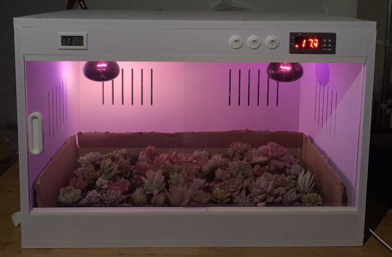
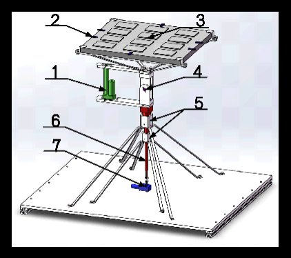
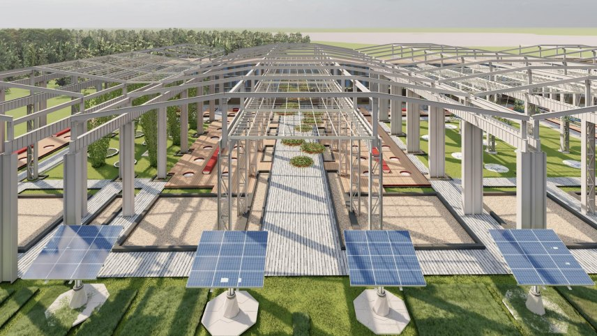
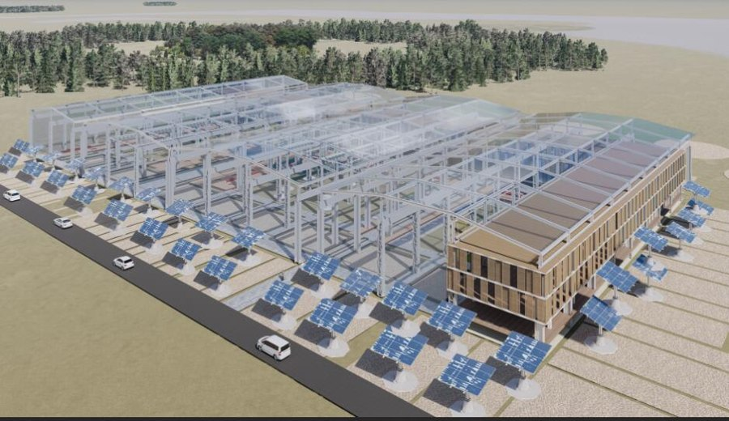

Smart Plant-Cultivation Device with Environmental Control
Project Leader · Student Innovation and Entrepreneurship Training Program, Chongqing University · 2021 – 2022
Overview
I led a funded student team that built a cultivation box for succulents, which need tightly controlled temperature, humidity and
light. The box is powered by a sun-tracking solar panel and keeps its environment within set ranges without manual adjustment.

The finished cultivation box with supplementary grow lighting.
System
Closed-loop environment control. Sensors measure temperature and humidity; the controller switches the heater, cooler,
humidifier and circulation fan to hold the target range.
Supplementary lighting. Grow lights are switched by measured light level, so plants keep growing at night and on cloudy days.
Sun-tracking solar supply. A low-power, high-precision light-intensity sensor (in place of a photoresistor) locates the sun.
Push-rod and gear motors with power-off self-locking turn the panel to the best angle and then cut power; they are powered again
only when the sun moves out of range, which saves energy.
Controller. A 51-series microcontroller runs the control loop and logs environmental data; a battery stores solar energy.

Mechanical design of the sun-tracking panel.

The same sun-tracking units, placed in a greenhouse.
Scaling up: greenhouse design
We also designed a larger version of the system: a greenhouse powered by rows of sun-tracking solar panels, using the same control
method as the box.

Design rendering of the solar-powered greenhouse.
Outcome
Built and tested the sun-tracking unit and the cultivation box, then refined both after testing.
Collected environmental and growth data for several succulent species, and grew 80 plants in the box.